Film
Documentaires over kunstenaars, architecten en de ideeën achter hun werk. Van persoonlijke portretten tot verhalen over de manier waarop we onze omgeving vormgeven.
13 films
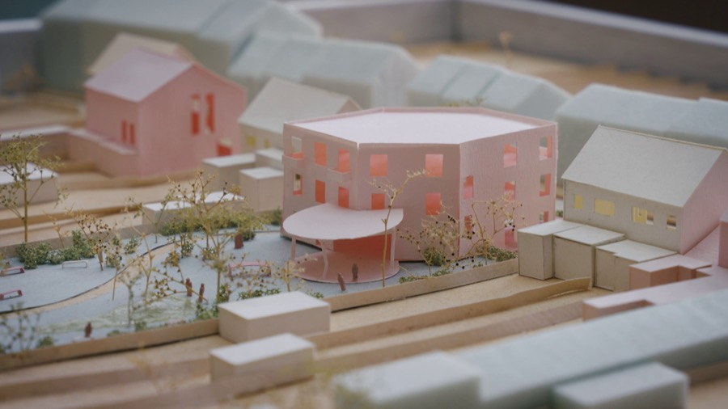
Houses for the Common Good
Ontwerpen aan onze toekomst
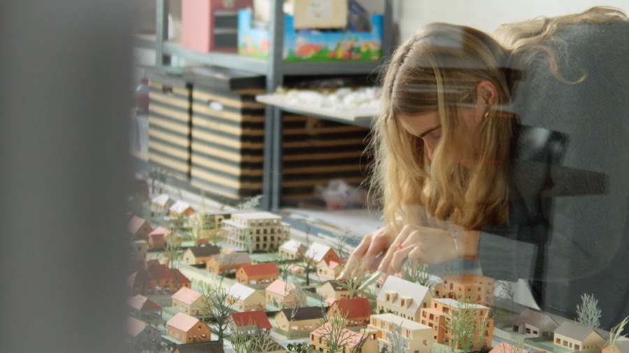
Heilige Huisjes? Verkavelingswijken in transformatie
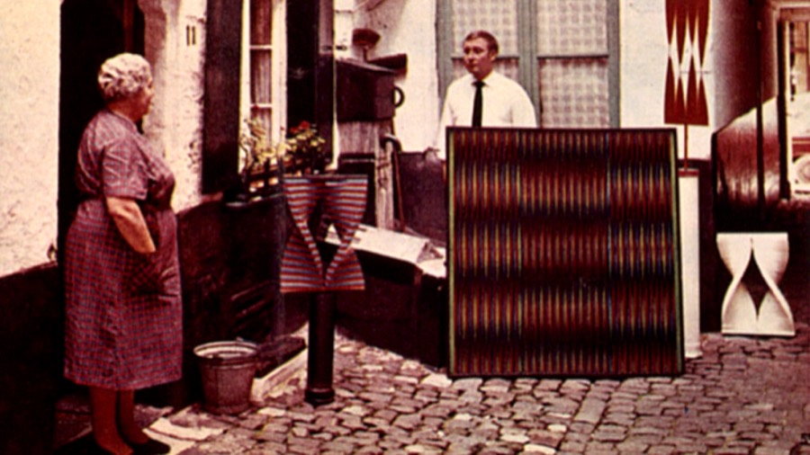
Walter Leblanc: gedreven door licht
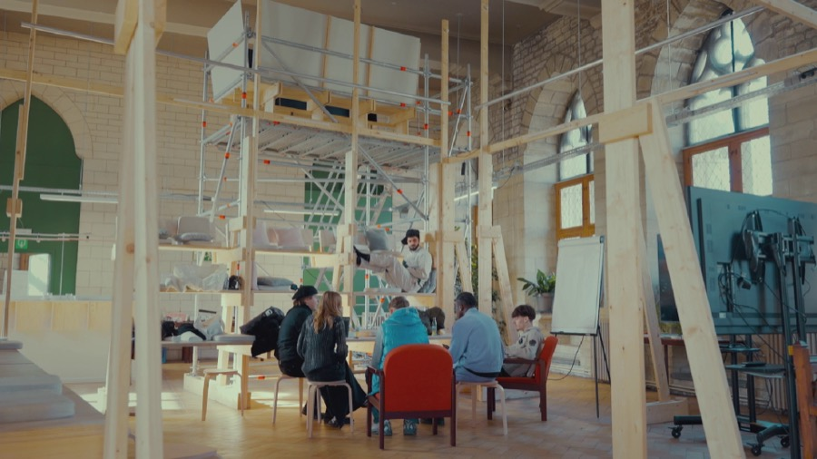
Future Fusion
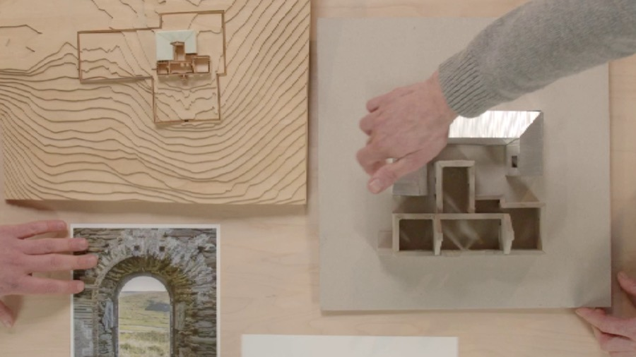
Exploring NU architectuuratelier

ARK

Leven in een ballon: het experiment van A.J. Lode Janssens
Francis Alÿs: spel zonder grenzen
Plannen voor de toekomst: Luc Deleu & T.O.P. Office
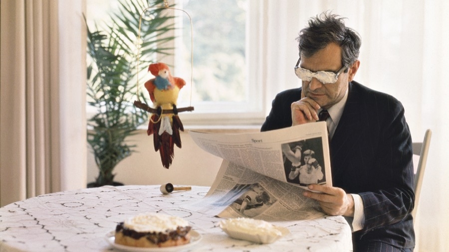
Het ABC van Marcel Broodthaers
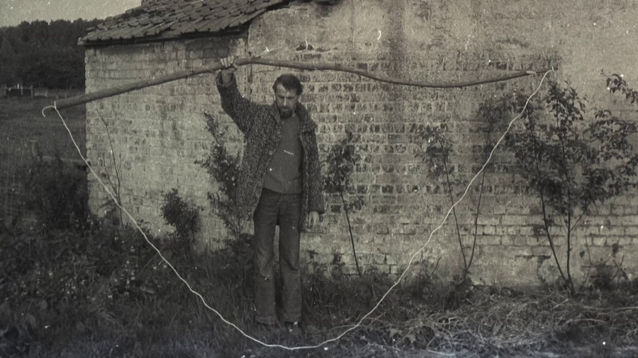
Het koninkrijk van René Heyvaert
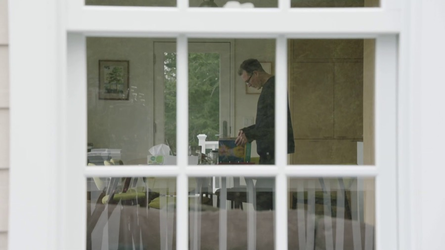
De Canvasconnectie
Alle producties
Documentaires, reeksen en korte films voor televisie, tentoonstellingen en opdrachtgevers.
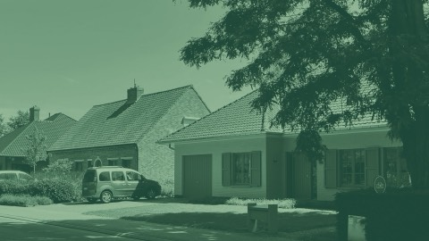
Unlock the Housing StockExtern ↗Hoe kunnen we meer mensen huisvesten zonder telkens nieuwe woningen te bouwen? Tijdens een summerschool in Nijlen onderzoeken jonge ontwerpers hoe bestaande woningen beter benut, gedeeld of opgesplitst kunnen worden om ruimte te maken voor veranderende woonbehoeften.
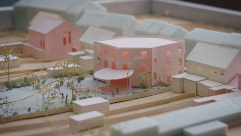
Houses for the Common GoodLees meer →Vijf korte documentaires over plekken die een nieuwe maatschappelijke betekenis krijgen. Van een herbestemde kerk tot een ontmoetingsplek voor jongeren: de films onderzoeken hoe architectuur, samenwerking en lokaal engagement ruimte kunnen creëren voor het gemeenschappelijk belang.
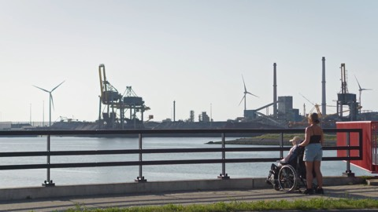
Ontwerpen aan onze toekomstLees meer →Hoe kunnen we de toekomst ontwerpen als we niet weten wat die brengt? Aan de hand van vijftig Nederlandse onderzoeken verkent deze documentaire hoe verbeelding en ontwerpend onderzoek nieuwe perspectieven openen op maatschappelijke en ruimtelijke uitdagingen.
- Heilige Huisjes? Verkavelingswijken in transformatieLees meer →
Kunnen bestaande verkavelingswijken een antwoord bieden op de groeiende woonnood? In Wondelgem, Roeselare en Tervuren onderzoeken ontwerpteams hoe deze wijken kunnen verdichten en vernieuwen, zonder de woonkwaliteiten te verliezen die bewoners er zo waarderen.
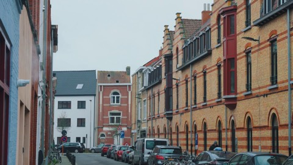
Hier wil ik wonen! Coöperatief woondromen in VlaanderenExtern ↗Vijf korte documentaires over Vlaamse wooncoöperaties en de mensen die er wonen of aan bouwen. Aan de hand van concrete projecten verkennen de films hoe collectief eigendom, gedeelde voorzieningen en samenwerking een alternatief kunnen bieden voor de klassieke woningmarkt.
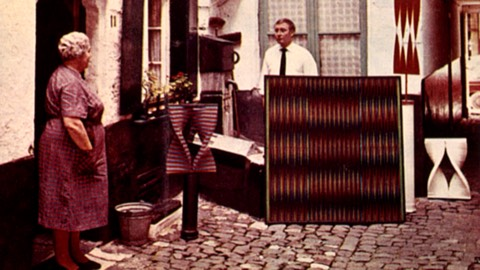
Walter Leblanc: gedreven door lichtLees meer →Een portret van de Belgische kunstenaar Walter Leblanc, die met licht, beweging en optische effecten een eigen beeldtaal ontwikkelde. De documentaire belicht zijn artistieke zoektocht en zijn plaats binnen de internationale kunstbeweging ZERO.
- Future FusionLees meer →
Hoe kijken jongeren naar hun eigen toekomst en die van de samenleving? In Future Fusion delen ze hun dromen, verwachtingen en bezorgdheden. Hun ideeën vormen het vertrekpunt voor een artistiek project in het historische stadhuis van Leuven.
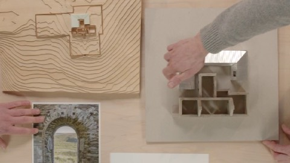
Exploring NU architectuuratelierLees meer →Een inkijk in de werkwijze van het Gentse ontwerpbureau NU architectuuratelier, waar architectuur ontstaat vanuit onderzoek, experiment en samenwerking. De film volgt de ontwerpers in hun zoektocht naar betekenisvolle ruimtes en toont hoe ideeën gaandeweg vorm krijgen.
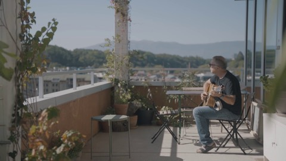
Coöperatief wonen in GenèveExtern ↗Vijf korte documentaires over wooncoöperaties in Genève. Aan de hand van concrete projecten en gesprekken met bewoners en betrokkenen tonen de films hoe collectief eigendom en gemeenschappelijk beheer vorm krijgen in het dagelijkse wonen.
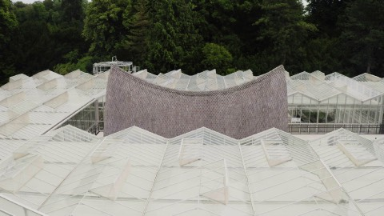
ARKLees meer →In de Plantentuin Meise krijgt een bijzondere architecturale constructie vorm. De documentaire verkent hoe architectuur en plantenonderzoek elkaar ontmoeten en waarom het bewaren van biodiversiteit van levensbelang is voor onze toekomst.
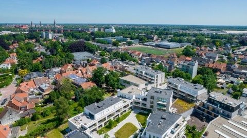
Beleidsplan Ruimte BruggeExtern ↗Zes korte films over de ruimtelijke toekomst van Brugge. Ze vertalen de strategische visie en vijf beleidskaders van de stad naar concrete uitdagingen en ambities, van wonen en open ruimte tot wijkontwikkeling en de transformatie van bestaande stadsdelen.
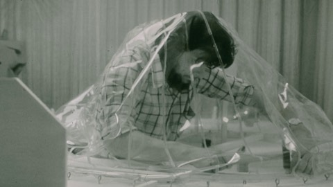
Leven in een ballon: het experiment van A.J. Lode JanssensLees meer →Begin jaren zeventig bouwt architect A.J. Lode Janssens een experimentele ballonwoning voor zichzelf en zijn gezin. De documentaire reconstrueert het verhaal achter dit bijzondere woonexperiment en onderzoekt wat er overblijft van de idealen waarmee het begon.
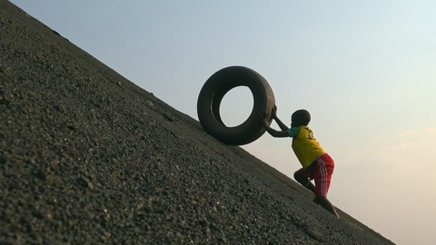
Francis Alÿs: spel zonder grenzenLees meer →Een portret van de Belgische kunstenaar Francis Alÿs, die met zijn poëtische en vaak speelse interventies de wereld om zich heen bevraagt. De documentaire verkent zijn veelzijdige oeuvre, met bijzondere aandacht voor zijn verzameling kinderspelen van over de hele wereld.
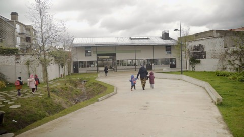
Stadsvernieuwing is mensenwerkExtern ↗Zes korte transformatieportretten over twintig jaar stadsvernieuwing in Vlaanderen. De films kijken achter de schermen van zes stadsvernieuwingsprojecten en laten de mensen aan het woord die deze plekken hebben vormgegeven, veranderd of er vandaag gebruik van maken.
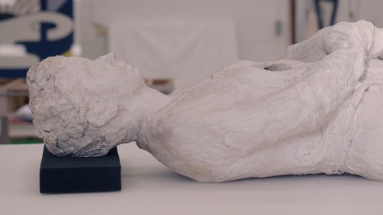
George Segal: de vergeten popart-kunstenaarExtern ↗Ooit werd de Amerikaanse kunstenaar George Segal in één adem genoemd met Warhol en Lichtenstein. Vandaag is zijn werk wat in de vergetelheid geraakt. Vanuit het S.M.A.K. herontdekt museumdirecteur Philippe Van Cauteren het bijzondere universum van deze eigenzinnige popartkunstenaar.
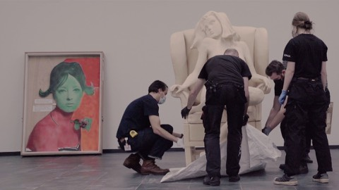
Popart: van Warhol tot PanamarenkoExtern ↗Vanuit het Gentse S.M.A.K. verkent museumdirecteur Philippe Van Cauteren de oorsprong, maatschappelijke context en actuele betekenis van de popart. Unieke archiefbeelden en getuigenissen van kunstenaars Jim Dine, Allen Jones en Martial Raysse brengen deze kunststroming opnieuw tot leven.
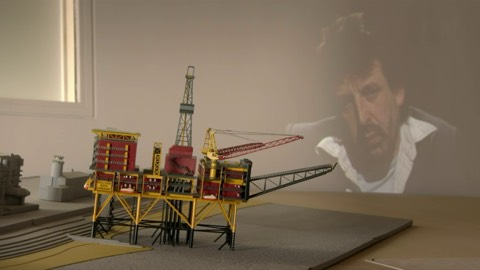
Plannen voor de toekomst: Luc Deleu & T.O.P. OfficeLees meer →Al meer dan vijftig jaar stelt architect en kunstenaar Luc Deleu onze omgang met ruimte, steden en de planeet ter discussie. De documentaire verkent zijn eigenzinnige oeuvre en de visionaire ideeën waarmee hij en T.O.P. Office blijven nadenken over de toekomst.
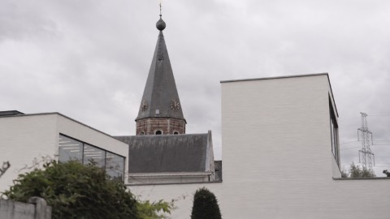
Het Roger RaveelmuseumExtern ↗Een kort portret van het Roger Raveelmuseum in Machelen-aan-de-Leie, ontworpen door Stéphane Beel. De architect vertelt hoe hij zich liet inspireren door de structuur van het dorp en een museum ontwierp dat een vanzelfsprekende plaats inneemt in zijn omgeving.
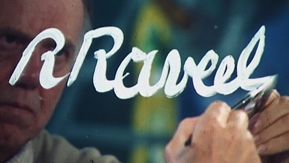
Wij, Roger RaveelExtern ↗Een portret van een van de belangrijkste vernieuwers van de Belgische schilderkunst. In zijn geboortedorp Machelen-aan-de-Leie halen mensen die Roger Raveel van dichtbij kenden herinneringen op aan de kunstenaar, zijn werk en zijn leven.
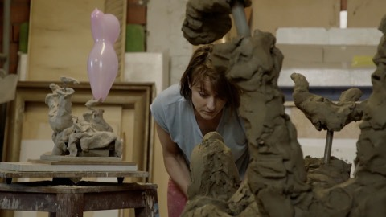
Nadia Naveau: Goofin’ AroundExtern ↗Voor beeldhouwster Nadia Naveau kan alles een inspiratiebron zijn. In haar atelier combineert ze uiteenlopende materialen, vormen en verwijzingen tot verrassende sculpturen. De film volgt haar tijdens het ontstaan van een monumentaal werk waarin zelfs Disneyfiguur Goofy een plaats krijgt.
- Het ABC van Marcel BroodthaersLees meer →
Hoewel Marcel Broodthaers tot de invloedrijkste Belgische kunstenaars behoort, werd nooit eerder een documentaire aan hem gewijd. Deze film verkent zijn eigenzinnige universum, waarin poëzie, beeldende kunst en institutionele kritiek voortdurend met elkaar in dialoog gaan.
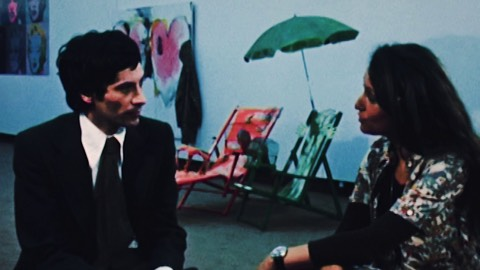
20 jaar S.M.A.K.Extern ↗Ter gelegenheid van zijn twintigste verjaardag blikt het Gentse S.M.A.K. terug op zijn bijzondere geschiedenis. De documentaire volgt museumdirecteur Philippe Van Cauteren tijdens de opbouw van een tentoonstelling en verkent de collectie, sleutelwerken en identiteit van het museum.
- Het koninkrijk van René HeyvaertLees meer →
Een portret van de eigenzinnige Belgische kunstenaar René Heyvaert, die met eenvoudige materialen en alledaagse voorwerpen een bijzonder oeuvre opbouwde. De documentaire verkent zijn artistieke universum, waarin architectuur, beeldende kunst en het dagelijkse leven nauw met elkaar verweven zijn.
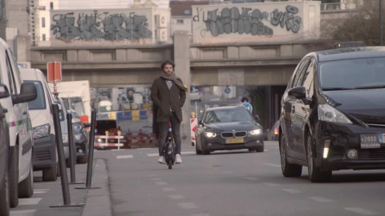
De Stad van MorgenExtern ↗Hoe kunnen we onze steden leefbaar houden in een steeds dichter bebouwd Vlaanderen? VRT NWS-journalist Riadh Bahri gaat in binnen- en buitenland op zoek naar antwoorden bij architecten, stedenbouwkundigen en andere experts. Centraal staat de toekomst van wonen, werken en mobiliteit.
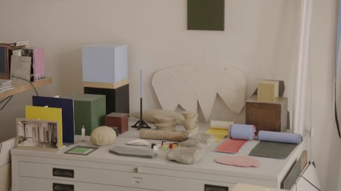
Philippe Van Snick: de poëzie van het systeemExtern ↗In zijn atelier in Schaarbeek vertelt kunstenaar Philippe Van Snick hoe zijn systematische manier van werken ontstond en door de jaren heen evolueerde. Hij laat zien hoe kleur en vaste principes de rode draad vormen doorheen zijn veelzijdige oeuvre.
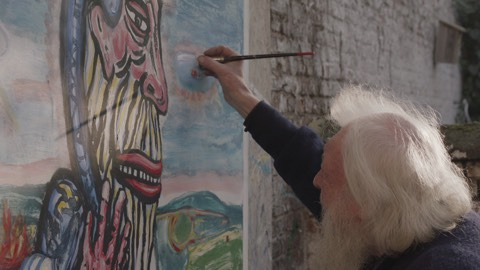
Hopen op de godenExtern ↗Waar halen creatieve geesten hun inspiratie vandaan? In zes afleveringen volgt deze reeks twaalf Belgische kunstenaars uit uiteenlopende disciplines. Elke aflevering brengt twee van hen samen, met bijzondere aandacht voor hun creatieve proces en persoonlijke manier van werken.
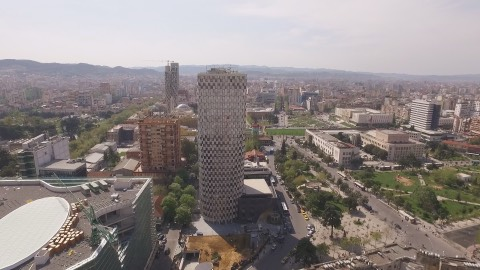
51N4E: Play for RealExtern ↗Een korte film over de TID Tower in Tirana, Albanië, gemaakt voor de presentatie van architectenbureau 51N4E op de Architectuurbiënnale van Venetië. De film verkent hoe samenwerking, vertrouwen en een open ontwerpproces tot onverwachte architecturale mogelijkheden kunnen leiden.
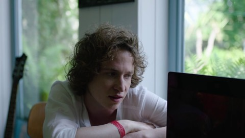
FestivalkoortsWelke festivals en artiesten mag je niet missen? In Festivalkoorts blikken muzikanten en muziekkenners vooruit op het festivalseizoen. Ze stellen hun ideale festivalparcours samen en gidsen de kijker langs grote namen, verrassende ontdekkingen en uiteenlopende muziekgenres.
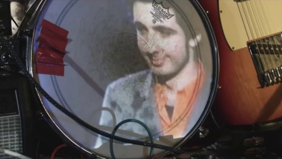
Humo’s Rock Rally 1978–2016Extern ↗Naar aanleiding van de twintigste editie van Humo’s Rock Rally blikken vijf voormalige winnaars terug op hun deelname aan de legendarische muziekwedstrijd. Met Stijn Meuris, Joost Zweegers, Mauro Pawlowski, Bent Van Looy en Dave Martijn, aangevuld met uniek archiefmateriaal.
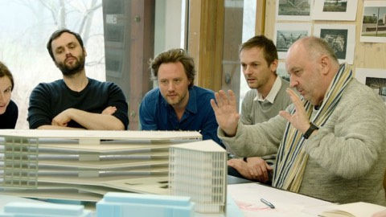
Reyers 2020Extern ↗Vijf architectenteams dingen mee naar de opdracht voor het nieuwe VRT-gebouw aan de Reyerslaan in Brussel. De reeks volgt hen tijdens het ontwerpproces en verkent hoe het toekomstige omroepgebouw deel zal uitmaken van een grootschalige stadsvernieuwing.
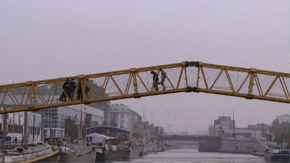
Atelier De StadExtern ↗Hoe maken we onze steden leefbaarder? Vijf documentaires volgen creatieve stadsateliers in Oostende, Kortrijk, Brussel, Gent en Hasselt-Genk. Bewoners, kunstenaars en ontwerpers experimenteren er met nieuwe ideeën rond publieke ruimte, duurzaamheid en samenleven.
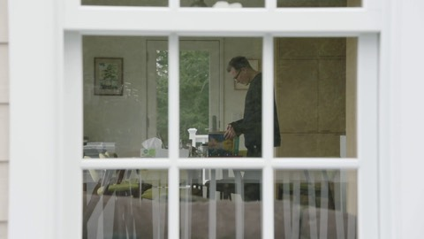
De CanvasconnectieLees meer →Een eigenzinnige kunstreeks waarin artiesten vanuit hun eigen werkplek vertellen over hun werk en dat van collega's. Uit een zorgvuldig samengesteld album kiezen ze wat hen boeit. Zo ontstaan onverwachte verbindingen tussen kunstenaars, disciplines en ideeën.
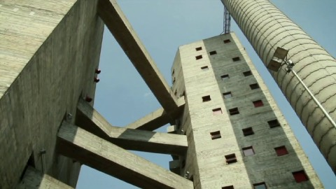
VormgeversExtern ↗Een achtdelige documentairereeks over Vlaamse ontwerpers, hun werk en hun creatieve proces. Een jaar lang volgen de camera’s uiteenlopende makers, van de eerste ideeën tot de realisatie van nieuw werk. Met onder anderen 51N4E, Sara De Bondt en Lowie Vermeersch.
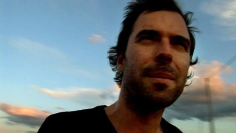
Weg Met De SoeteExtern ↗In acht afleveringen verkent Tomas De Soete evenveel steden, telkens aan de zijde van een lokale kunstenaar of creatieve professional. Van Marseille tot Casablanca ontdekt hij plekken en verhalen die buiten de klassieke toeristische routes vallen en het karakter van elke stad blootleggen.